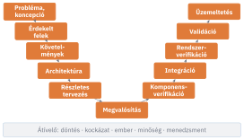
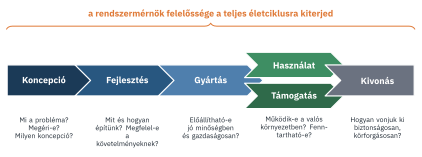
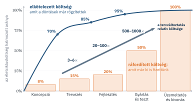
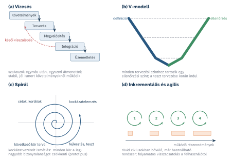
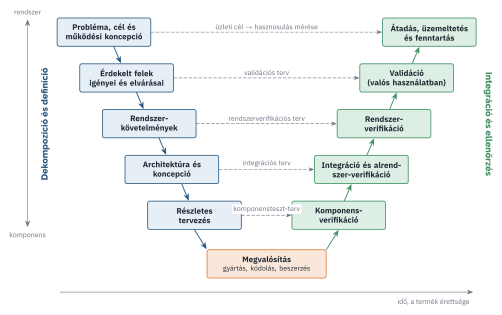
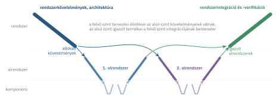
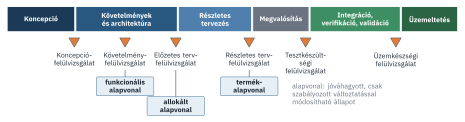

A fejezet feldolgozása után képes leszel:
- megnevezni egy műszaki rendszer életciklusának szakaszait, és megindokolni, miért a korai döntések határozzák meg a költségek nagy részét;
- összehasonlítani a vízesés-, a V-, a spirál- és az inkrementális/agilis életciklus-modellt, és egy adott projekthez indokoltan választani közülük;
- elmagyarázni a V-modell bal ágának, csúcsának és jobb ágának feladatait, valamint a két ág közötti vízszintes megfeleltetéseket;
- megkülönböztetni a verifikációt és a validációt, és mindkettőre saját példát adni;
- leírni, hogyan alkalmazzuk a V-modellt rekurzívan a rendszer hierarchiájának szintjein, és mi a szerepe a felülvizsgálatoknak és az alapvonalaknak;
- saját fejlesztési projektedhez elkészíteni a projekt V-tervét.
Ez a fejezet a könyv gerince. Mielőtt bármelyik módszerrel (érdekeltfél-elemzéssel, QFD-vel, FMEA-val vagy folyamatmodellezéssel) foglalkoznánk, látnunk kell azt a pályát, amelyen ezek a módszerek elhelyezkednek. Először a rendszer teljes életét tekintjük át, és megnézzük, miért dől el olyan korán a projekt sorsa. Ezután összevetjük a legfontosabb életciklus-modelleket. A fejezet közepén részletesen bejárjuk a V-modellt, amely a könyv szerkezetét is adja. Végül megmutatjuk, hogyan ismétlődik a V a rendszer különböző szintjein, mit jelentenek a felülvizsgálatok és az alapvonalak, és hogyan néz ki a V a három futó esettanulmányban (A. függelék).
2.1. Egy rendszer élete a koncepciótól a kivonásig
Egy új rendszer nem akkor kezdődik, amikor az első alkatrészt legyártják, és nem is akkor ér véget, amikor a vevő átveszi. A rendszermérnöki szemlélet egyik alapgondolata, hogy a rendszert a teljes életciklusára tervezzük. Ebbe beletartozik, hogyan gyártják, hogyan használják, hogyan tartják karban, és hogyan vonják ki a forgalomból. Az életciklus-kezelés nemzetközi szabványa és az INCOSE rendszermérnöki kézikönyve hat általános életciklus-szakaszt különböztet meg: koncepció, fejlesztés, gyártás, használat, támogatás és kivonás (2.1. ábra) (ISO/IEC/IEEE 2024; INCOSE 2023, 2.1.2. szakasz).

A szakaszok tartalma röviden a következő.
- A koncepciószakaszban megértjük a problémát és az érdekelt felek igényeit. Lehetséges megoldási elképzeléseket vázolunk fel, és eldöntjük, érdemes-e egyáltalán belevágni.
- A fejlesztési szakaszban a kiválasztott koncepcióból követelmények, architektúra és részletes terv lesz. Ebben a szakaszban készülnek és ellenőrződnek a prototípusok is.
- A gyártási szakasz a rendszer előállítását, sorozatgyártásnál a gyártási folyamat felfuttatását jelenti.
- A használat során a rendszer azt teszi, amire szántuk. A támogatás gondoskodik arról, hogy ezt hosszú távon is meg tudja tenni.
- A kivonás a rendszer biztonságos leállítását, szétszerelését, az anyagok visszanyerését vagy ártalmatlanítását foglalja magában.
A szakaszok száma és elnevezése iparáganként és szervezetenként eltér. Az űrkutatásban és a védelmi iparban betűvel vagy számmal jelölt fázisok terjedtek el, egy gyártócég pedig gyakran a saját termékfejlesztési folyamatának lépéseit nevezi meg. A szabvány ezért csak általános keretet ad, amelyet minden szervezet a saját gyakorlatához igazít (ISO/IEC/IEEE 2024). A lényeg mindenhol ugyanaz: a döntéseket a teljes életút következményeinek ismeretében kell meghozni.
2.1.1. Miért dől el korán a projekt sorsa?
A 2.2. ábra a rendszermérnökség talán legtöbbet idézett összefüggését mutatja. Az amerikai Védelmi Beszerzési Egyetem (DAU) vizsgálatai szerint, amelyeket az INCOSE kézikönyve is közöl, a koncepciószakasz végére, a munka mintegy 8%-ának elvégzésekor a meghozott döntések az életciklusköltség körülbelül 70%-át már elkötelezik, a tervezés végére pedig mintegy 85%-át (INCOSE 2015). A ténylegesen elköltött összeg ekkor még csak töredéke ennek. A tervezés dönti el ugyanis, hogy a rendszert mennyibe kerül majd tesztelni, gyártani, integrálni, üzemeltetni és fenntartani.

Az ábra másik üzenete a tervváltoztatás költségének meredek növekedése. Egy probléma, amelyet a tervezés során háromszor-hatszor annyiba kerül kijavítani, mint a koncepciónál, a gyártás és a tesztelés idején már nagyságrendekkel drágább. Az üzemeltetés során felfedezett hiba ára akár ezerszeres is lehet. Ennek oka egyszerű: minél később változtatunk, annál több kész munkát kell kidobni és újra ellenőrizni.
Ebből következik a rendszermérnökség egyik legfontosabb gyakorlati tanulsága. A korai szakaszokba fektetett gondos munka – az igények feltárása, a követelmények tisztázása, a koncepciók összevetése – a teljes projekt legjobb megtérülésű befektetése.
A Kobold Hajtástechnika csapata a koncepciószakaszban dönti el, hogy a kobot és az operátor ugyanazon a munkaterületen, egyidejűleg dolgozik-e, vagy időben elkülönülve, egymás után. Ezen az egyetlen döntésen múlik:
- milyen biztonsági megoldások kellenek (sebesség- és erőkorlátozás vagy elválasztó védőberendezés);
- mekkora helyet foglal a cella, és milyen lesz az operátor mozgásterülete;
- mekkora ciklusidő érhető el;
- milyen kockázatelemzést és milyen tanúsítást kell elvégezni.
Ha a csapat ezt csak az üzembe helyezéskor gondolná újra, a cella elrendezését, a vezérlést, a biztonsági rendszert és a dokumentációt is újra kellene tervezni.
A költség azonban csak az egyik szempont. Ha egy megoldás már jól kiegyensúlyozott, vagyis egyik jellemzője sem javítható a többi rontása nélkül (a 10. fejezet szavával: a Pareto-fronton van), akkor a teljesítmény, a költség és a kockázat nem javítható egyszerre. Ez a rendszermérnök dilemmája:
- adott kockázat mellett a költség csökkentése csak a teljesítmény rovására lehetséges;
- adott költség mellett a kockázat csökkentése szintén teljesítményt kíván;
- adott teljesítmény mellett a költség csökkentése nagyobb kockázatvállalással jár;
- adott teljesítmény mellett a kockázat csökkentése többletköltséggel jár.
Az idő ebben az összefüggésben a költséghez hasonlóan viselkedik. A rendszermérnök feladata, hogy ezeket a kompromisszumokat tudatosan és átláthatóan kezelje. Ehhez nyújtanak segítséget a 10. fejezet döntéstámogató módszerei.
2.2. Életciklus-modellek: hogyan haladunk végig a szakaszokon?
Az életciklus-szakaszok azt írják le, mi történik a rendszerrel. Az életciklus-modell azt, hogy a fejlesztés során milyen sorrendben, milyen visszacsatolásokkal és milyen ismétlésekkel haladunk végig a tevékenységeken. A szakirodalom sokféle modellt ismer. Itt a négy legfontosabbat vetjük össze (2.3. ábra, 2.1. táblázat).

A vízesésmodell a tevékenységeket egymást követő szakaszokba rendezi. Minden szakasz egy jól meghatározott dokumentummal zárul, és a következő csak ennek elkészülte után indul. A modell eredetét többnyire Winston Royce 1970-es cikkére vezetik vissza (Royce 1970). Érdekes, hogy Royce éppen ennek a tisztán egyirányú folyamatnak a kockázataira figyelmeztetett. A szakaszok közötti visszacsatolást és egy előzetes, „kétszer építsd meg” jellegű próbaváltozat elkészítését javasolta. A vízesés előnye az átláthatóság és a jó tervezhetőség. Hátránya, hogy a hibák jellemzően csak a végén, az integráció és a tesztelés során derülnek ki, és a menet közben változó követelményeket nehezen kezeli.
A V-modell a vízesés lépéseit V alakba hajlítja. A bal ágon fentről lefelé haladva bontjuk le és határozzuk meg a rendszert, a jobb ágon lentről felfelé haladva építjük össze és ellenőrizzük. A modell ereje a két ág közötti vízszintes kapcsolatokban rejlik: minden meghatározási szinthez tartozik egy ellenőrzési szint, és az ellenőrzés tervét már a meghatározással egy időben elkészítjük. A V alakú ábrázolás szoftverfejlesztési változatát Paul Rook írta le 1986-ban (Rook 1986). A rendszermérnöki „Vee” modellt Kevin Forsberg és Harold Mooz 1991-ben mutatta be (Forsberg és Mooz 1991). Ebben a technikai folyamat a bal felső sarokban a felhasználói igényekkel indul, és a jobb felső sarokban a felhasználó által validált rendszerrel zárul. Ettől függetlenül Németországban a szövetségi informatikai projektek kötelező eljárásrendjévé vált a V-Modell. Mai változata a 2005 óta érvényes V-Modell XT (Friedrich és mtsai. 2009).
A spirálmodellt Barry Boehm írta le (B. W. Boehm 1988). A fejlesztés egymást követő körökben halad. Minden kör a célok és korlátok tisztázásával indul, ezt kockázatelemzés követi, majd a legnagyobb bizonytalanság csökkentésére szolgáló fejlesztési és tesztelési lépés (gyakran prototípus), végül a következő kör megtervezése. A spirálmodell lényege, hogy a kockázatok vezérlik a folyamatot. Ott és annyit kell elemezni és prototípust építeni, ahol a legnagyobb a bizonytalanság. A modell későbbi továbbfejlesztése a fokozatos elköteleződésre épülő spirálmodell (Incremental Commitment Spiral Model) (B. Boehm és mtsai. 2014).
Az inkrementális és az agilis fejlesztés rövid ciklusokban, működő részeredményeket szállítva halad. A 2001-es Agilis kiáltvány (Beck és mtsai. 2001) a folyamatos együttműködést, a működő terméket és a változásokra való gyors reagálást helyezte előtérbe. A szoftverfejlesztésben ez ma elterjedt gyakorlat. A hardvert is tartalmazó, nagyobb rendszerekben viszont jellemzően hibrid megoldás működik. A rendszerszintű követelményeket, az architektúrát és a biztonsági igazolást V-modell szerint kezelik, az egyes alrendszereken, különösen a szoftveren belül pedig agilis ciklusokban dolgoznak. Az INCOSE kézikönyve az agilis rendszermérnökséget már önálló megközelítésként tárgyalja (INCOSE 2023).
| Modell | Mikor jó választás? | Erősségek | Kockázatok |
|---|---|---|---|
| Vízesés | Stabil, jól ismert követelmények; ismert technológia; kis bizonytalanság | Egyszerű, jól tervezhető, jól dokumentált | Késői hibafelismerés; a változás drága |
| V-modell | Biztonságkritikus vagy szabályozott termékek; sok alrendszer; szigorú igazolási igény | A verifikáció és a validáció korai tervezése; nyomonkövethetőség | Merev, ha szó szerint egyirányú folyamatnak értelmezik |
| Spirál | Új technológia, nagy műszaki vagy piaci bizonytalanság | Célzott kockázatcsökkentés, prototípusok | Nagyobb irányítási igény; nehezebb ütemezni |
| Inkrementális/agilis | Gyorsan változó igények; szoftverintenzív rendszerek; korai felhasználói visszajelzés kell | Gyors tanulás, korán használható eredmény | Az architektúra és a rendszerszintű igazolás elsikkadhat |
Gyakori félreértés, hogy a V-modell egy szigorú időbeli sorrendet ír elő: előbb minden követelményt véglegesíteni kell, aztán minden tervet, és csak a legvégén szabad tesztelni. A V-modell valójában logikai kapcsolatokat ábrázol: mi miből következik, és mit mivel ellenőrzünk. A gyakorlatban a V-t sokszor bejárjuk (prototípussal, szimulációval, részleges integrációval), és a jobb ág tevékenységei, például egy kritikus alkatrész korai tesztelése, a bal ági munkával párhuzamosan is indulhatnak. A V és az iteráció tehát nem zárja ki egymást (lásd 2.4. szakasz).
2.3. A V-modell bejárása
A könyv további része a 2.4. ábrán látható V-modellt követi. Az ábra a bal ágon öt meghatározási szintet, a csúcson a megvalósítást, a jobb ágon pedig öt ellenőrzési és üzembe állítási lépést mutat. A szaggatott vízszintes vonalak jelzik, melyik bal ági munkatermék szolgál melyik jobb ági ellenőrzés alapjául.

2.3.1. A bal ág: a problémától a részletes tervig
A bal ágon minden lépés egy kérdésre felel, és egy munkaterméket (dokumentumot, modellt vagy döntést) állít elő, amely a következő lépés bemenete lesz.
- Probléma, cél és működési koncepció. Milyen problémát oldunk meg, és miért éri meg? A munkatermék a szükségletek, célok és célkitűzések rendszere, valamint a működési koncepció (ConOps). A ConOps a felhasználó szemszögéből írja le, hogyan fogják használni a rendszert, beleértve a rendellenes és a leromlott üzemmódokat is (4. fejezet).
- Az érdekelt felek igényei és elvárásai. Kiket érint a rendszer, és mit várnak tőle? Az eredmény az érdekelt felek nyilvántartása és a validált elvárások listája, a hatékonyság mérőszámaival (5. fejezet).
- Rendszerkövetelmények. Mit kell a rendszernek mérhetően teljesítenie? Az elvárásokból egyértelmű, ellenőrizhető, a megoldást elő nem író követelmények lesznek, mindegyikhez hozzárendelt verifikációs móddal (6. és 7. fejezet).
- Architektúra és koncepció. Milyen elemekből, milyen kapcsolatokkal épül fel a rendszer? A funkciókat formai elemekhez rendeljük, koncepcióváltozatokat generálunk és választunk közülük, a követelményeket pedig lebontjuk az alrendszerekre (8., 9. és 10. fejezet).
- Részletes tervezés. Pontosan hogyan valósítjuk meg az egyes elemeket? Ide tartoznak a gyártási rajzok, a kapcsolási rajzok, a szoftvertervek és a tűrések. Ezen a szinten kerülnek előtérbe a megbízhatósági, biztonsági és ember–gép szempontok is (11–18. fejezet).
2.3.2. A csúcs: megvalósítás
A V csúcsán a tervekből valóság lesz. Gyártjuk, beszerezzük vagy kódoljuk az elemeket. Mivel könyvünk műszaki menedzsereknek és mechatronikai mérnököknek is szól, ide soroljuk a gyártó- és szolgáltatófolyamatok tervezését is: a folyamatelemzést, a kapacitástervezést, a folyamatmodellezést és az ütemezést (19–21. fejezet). Ha a fejlesztés tárgya maga egy gyártócella vagy egy szolgáltatás, ezek a módszerek a megvalósítás magját alkotják.
2.3.3. A jobb ág: az integrációtól az üzemeltetésig
A jobb ágon lentről felfelé haladva állítjuk össze és ellenőrizzük a rendszert.
- Komponens-verifikáció. Minden elkészült elemről igazoljuk, hogy megfelel a részletes terv követelményeinek.
- Integráció és alrendszer-verifikáció. Az elemeket lépésenként összeépítjük. Ez az a pont, ahol az interfészhibák jellemzően felszínre kerülnek (22. fejezet).
- Rendszerverifikáció. A teljes rendszerről igazoljuk, hogy minden rendszerkövetelményt teljesít (23. fejezet).
- Validáció. Valós vagy valósághű környezetben, valódi felhasználókkal igazoljuk, hogy a rendszer valóban azt nyújtja, amit az érdekelt felek vártak (24. fejezet).
- Átadás, üzemeltetés és fenntartás. A rendszert átadjuk, beüzemeljük, működtetjük, és mérjük, hogy a várt haszon valóban megvalósul-e. Az üzemeltetési tapasztalatok a folyamatos fejlesztés és a következő fejlesztési ciklus bemenetei lesznek (25. fejezet).
2.3.4. Vízszintes megfeleltetések: korai tesztterv
A V-modell legfontosabb gyakorlati üzenete a vízszintes vonalakban rejlik. Amikor a bal ágon megfogalmazunk valamit, egyúttal azt is el kell döntenünk, hogyan fogjuk a jobb ágon igazolni. Ha egy követelményről a megfogalmazás pillanatában nem tudjuk megmondani, milyen vizsgálattal ellenőrizzük majd, akkor az a követelmény valószínűleg nem elég pontos. Így a korai tesztterv nem bürokratikus többletmunka, hanem a bal ági munka minőségének próbája.
Az ISO/IEC/IEEE 15288 szabvány a két fogalmat így választja szét (ISO/IEC/IEEE 2023):
- Verifikáció: objektív bizonyítékokkal alátámasztott megerősítése annak, hogy a termék teljesíti a rögzített követelményeket. A bizonyítékot vizsgálat, elemzés, bemutatás vagy teszt adja, vagy ezek kombinációja. Boehm rövid kérdésével: jól építjük-e meg a terméket? (B. W. Boehm 1984)
- Validáció: objektív bizonyítékokkal alátámasztott megerősítése annak, hogy a termék a tervezett használatra, a tervezett környezetben alkalmas, vagyis betölti a rendeltetését, és megfelel a megrendelő és a többi érdekelt fél elvárásainak. Boehm kérdésével: a jó terméket építjük-e?
A verifikáció a jóváhagyott követelményekre hivatkozik, a validáció a működési koncepcióra és az érdekelt felek elvárásaira. Validálni nemcsak a végén lehet és kell: a korai szakaszokban modellekkel, makettekkel és szimulációval is feltehető a kérdés, hogy a megfelelő terméket építjük-e a felhasználóinknak (INCOSE 2023).
Az egyik rendszerkövetelmény így szól: „A kerékpár kölcsönzésének elindítása az alkalmazásban a QR-kód beolvasásától a zár nyitásáig legfeljebb 5 másodpercig tarthat, a kölcsönzések legalább 95%-ában.” Ennek ellenőrzése verifikáció: tesztkörnyezetben, mért időkkel igazolható.
A validáció más kérdést tesz fel: képesek-e a 65 év feletti lakók esős időben, kesztyűben, segítség nélkül kölcsönözni? Lehet, hogy az 5 másodperces követelmény teljesül, a felhasználók mégis elakadnak, mert a QR-kód a dokkoló alján, rossz szögben van. A rendszer ilyenkor átmegy a verifikáción, a validáción viszont elbukik. A hiba forrása a bal ág felső szintjein keresendő: valamelyik érdekelt fél elvárását nem tártuk fel, vagy nem fordítottuk le követelménnyé.
2.3.5. A V-modell és a szabványos folyamatok
A V-modell lépései nem egy könyv kitalációi: megfelelnek a nemzetközi szabványok folyamatainak. Az ISO/IEC/IEEE 15288:2023 szabvány harminc folyamatot határoz meg négy csoportban: megállapodási, szervezeti projekttámogató, technikai irányítási és technikai folyamatokat (ISO/IEC/IEEE 2023). A tizennégy technikai folyamat sorra követi a V-t az üzleti vagy küldetéselemzéstől a kivonásig, a nyolc technikai irányítási folyamat pedig a teljes V-n átível. Az INCOSE kézikönyve ugyanezt a folyamatrendszert részletezi gyakorlati tanácsokkal (INCOSE 2023, 2.3. szakasz). A 2.2. táblázat megmutatja, melyik V-lépéshez melyik szabványos folyamat tartozik, és a könyv melyik fejezete foglalkozik vele.
| A V-modell lépése | ISO/IEC/IEEE 15288:2023 folyamat | Szakasz | Fejezet |
|---|---|---|---|
| Probléma, cél, működési koncepció | Üzleti vagy küldetéselemzés | 6.4.1 | 4. |
| Az érdekelt felek igényei | Az érdekelt felek igényeinek és követelményeinek meghatározása | 6.4.2 | 5. |
| Rendszerkövetelmények | Rendszerkövetelmények meghatározása | 6.4.3 | 6–7. |
| Architektúra és koncepció | Rendszerarchitektúra meghatározása; rendszerelemzés | 6.4.4; 6.4.6 | 8–10. |
| Részletes tervezés | Tervmeghatározás; rendszerelemzés | 6.4.5; 6.4.6 | 11–18. |
| Megvalósítás | Megvalósítás | 6.4.7 | 19–21. |
| Integráció | Integráció | 6.4.8 | 22. |
| Verifikáció (komponens- és rendszerszinten) | Verifikáció | 6.4.9 | 23. |
| Validáció | Validáció | 6.4.11 | 24. |
| Átadás, üzemeltetés, fenntartás | Átadás; üzemeltetés; karbantartás; kivonás | 6.4.10; 6.4.12–6.4.14 | 25. |
| Átívelő tevékenységek | Technikai irányítási folyamatok (projekttervezés, döntéskezelés, kockázatkezelés, konfigurációkezelés stb.) | 6.3.1–6.3.8 | 10., 14., 26. |
2.4. A V a V-ben: rekurzió és iteráció
A V-modellt nem egyszer alkalmazzuk a teljes rendszerre. A rendszer hierarchiájának minden szintjén újra lejátszódik (2.5. ábra). A rendszerszintű architektúra eredményeként kialakulnak az alrendszerek, és mindegyik megkapja a rá lebontott, allokált követelményeket. Az alrendszer fejlesztője számára ezek az allokált követelmények jelentik a saját V-jének bal felső sarkát. Az alrendszer saját architektúrát, komponenseket és részletes tervet dolgoz ki, a komponenseket verifikálja, integrálja, végül a kész alrendszert igazoltan visszaadja a rendszerszintű integrációnak.

Az ISO/IEC/IEEE 15288 szabvány a folyamatok alkalmazásának kétféle ismétlődését különbözteti meg (ISO/IEC/IEEE 2023, 5.8.2. szakasz; NASA 2016, 2.3. szakasz). A rekurzió azt jelenti, hogy ugyanazokat a folyamatokat a termékszerkezet egymás alatti szintjein újra alkalmazzuk. Az iteráció azt jelenti, hogy egy szinten belül többször is végigmegyünk a folyamatokon, amíg a követelmények, a koncepció és a terv összhangba nem kerülnek. A fejlesztés így egymást követő finomításokkal halad: a koncepciószakasz vázlatos körét egyre részletesebb körök követik, és minden kör érettebb, pontosabb eredményt ad.
A KoboCella rendszerszintű V-jének architektúralépése öt alrendszert jelöl ki:
- a kobot a megfogóval;
- a csavarozóegység a nyomatékszabályozással;
- a biztonsági rendszer (érzékelők, biztonsági vezérlő);
- a munkahely és az ergonómiai kialakítás;
- a cellavezérlés a MES-kapcsolattal.
A csavarozóegységet a beszállító fejleszti. Neki a „8 csavar meghúzása 4,0 ± 0,2 Nm nyomatékkal, 2 másodperces csavaronkénti ciklusidővel, minden meghúzás nyomatékgörbéjének naplózásával” típusú allokált követelmények jelentik a kiindulópontot. A beszállító saját V-t jár be, a cella csapata pedig a kész egység verifikációs jegyzőkönyvét kapja meg, mielőtt integrálja.
2.5. Mérföldkövek, felülvizsgálatok és alapvonalak
Honnan tudjuk, hogy egy szakasz eredménye elég érett ahhoz, hogy a következőre lépjünk? Erre szolgálnak a technikai felülvizsgálatok. Ezek előre tervezett, dokumentált bizonyítékokra épülő értékelések, amelyeken az érdekelt felek és a független szakértők közösen döntik el, hogy a munka a következő szakaszba léphet-e (2.6. ábra) (IEEE 2014). A felülvizsgálat nem formalitás: az a pont, ahol a projekt még olcsón korrigálhat.

| Felülvizsgálat | Kulcskérdés | Tipikus bizonyítékok | Angol elnevezés |
|---|---|---|---|
| Koncepció-felülvizsgálat | Értjük-e a problémát, és van-e megvalósítható, megérő koncepció? | Szükségletek és célok, működési koncepció, koncepcióváltozatok, előzetes költség- és kockázatbecslés | Alternative Systems Review (ASR) |
| Követelmény-felülvizsgálat | Teljesek, egyértelműek és ellenőrizhetők-e a rendszerkövetelmények? | Rendszerkövetelmény-specifikáció, nyomonkövethetőség az elvárásokig, verifikációs módok | System Requirements Review (SRR) |
| Előzetes tervfelülvizsgálat | Teljesítheti-e a választott architektúra az összes követelményt elfogadható kockázattal? | Architektúra, allokált követelmények, interfészek, kompromisszumelemzések, előzetes biztonsági és megbízhatósági elemzések | Preliminary Design Review (PDR) |
| Részletes tervfelülvizsgálat | Kész-e a terv a gyártásra, kódolásra és beszerzésre? | Részletes tervek, tűrések, FMEA, tesztelési tervek | Critical Design Review (CDR) |
| Tesztkészültségi felülvizsgálat | Felkészültünk-e a formális tesztelésre? | Tesztelési eljárások, kalibrált eszközök, a tesztobjektum konfigurációja | Test Readiness Review (TRR) |
| Üzemkészségi felülvizsgálat | Átadható-e a rendszer üzemeltetésre? | Verifikációs és validációs eredmények, kezelési utasítások, képzés, karbantartási terv | System Verification Review (SVR), Operational Readiness Review (ORR) |
A felülvizsgálatok egyik legfontosabb kimenete az alapvonal. Ez a rendszer leírásának jóváhagyott állapota, amely ettől kezdve csak szabályozott változáskezeléssel módosítható. Az amerikai védelmi gyakorlat a fejlesztési szintekhez igazodva három alapvonalat különböztet meg (Defense Acquisition University 2001):
- a funkcionális alapvonal a rendszerszintű, teljesítményben megfogalmazott leírás;
- az allokált alapvonal az alrendszerek és komponensek teljesítményleírása;
- a termékalapvonal a gyártáshoz szükséges részletes leírás.
Az alapvonal haszna egyszerű: mindenki ugyanarról a változatról beszél. Egy változtatási javaslat hatása (költség, ütemezés, más elemekre gyakorolt következmény) az alapvonalhoz képest értékelhető. A konfigurációkezelést a 26. fejezet tárgyalja részletesen.
Gyakori hiba, hogy a felülvizsgálat a csapat bemutatkozó előadásává válik, ahol mindenki azt hangsúlyozza, ami jól sikerült. A felülvizsgálat akkor éri el a célját, ha előre rögzített belépési és kilépési feltételei vannak (milyen dokumentumoknak, eredményeknek kell meglenniük), a bírálók a dokumentumokat előre megkapják, és a nyitott kérdéseket felelőssel és határidővel rögzítik a jegyzőkönyvben.
A felülvizsgálatok száma és formalitása a projekt méretéhez igazítható. Egy féléves hallgatói projektben vagy egy kisvállalati fejlesztésben elegendő lehet három ellenőrzési pont: a koncepció és a követelmények jóváhagyása, a terv jóváhagyása, végül az átadás előtti ellenőrzés. A folyamatok projekthez igazításának (tailoring) a szabványok és a szakirodalom külön figyelmet szentel (ISO/IEC/IEEE 2023; INCOSE 2023, 4. fejezet; NASA 2016, 3.11. szakasz). Az elv egyszerű: a folyamat szolgálja a projektet, és ne fordítva.
2.6. A három futó eset a V-modellben
Hogyan néz ki mindez a gyakorlatban? A 2.4. táblázat a három futó esettanulmány néhány jellemző munkatermékét rendeli a V-modell lépéseihez. Érdemes megfigyelni, hogy a C eset, a ForgácsTech digitális átállása esetében a „rendszer” elsősorban egy szervezet és annak folyamatai. A V-modell logikája itt is ugyanúgy működik: a problémából követelmények lesznek, azokból terv, a tervből megvalósítás, a megvalósítást pedig ellenőrizni és validálni kell.
| V-lépés | A: KoboCella | B: VárosiBringa | C: ForgácsTech |
|---|---|---|---|
| Probléma, működési koncepció | Növekvő igény, ergonómiai panaszok, utómunka; a műszak működési forgatókönyvei | Rövid autós utak kiváltása dombos városban; a kölcsönzés és visszaadás forgatókönyvei | Határidő-csúszások, átláthatatlan gépállapot; egy rendelés útja az üzemen át |
| Érdekelt felek | Operátorok, munkavédelem, vevő, integrátor | Lakosok, önkormányzat, üzemeltető, közlekedési társaság | Tulajdonos, gépkezelők, vevők, MES-szállító |
| Rendszerkövetelmények | Ciklusidő, első átmenetes kihozatal, ergonómiai terhelés, nyomaték-naplózás | Elérhetőség, kölcsönzési idő, áthelyezési költség, akadálymentesség | Átfutási idő, adatgyűjtési lefedettség, OEE-mérés pontossága |
| Architektúra | Kobot, csavarozó, biztonsági rendszer, munkahely, vezérlés | Kerékpár, dokkoló, alkalmazás, háttérrendszer, szerviz | Gépcsatlakozások, MES, ütemező modul, terminálok |
| Részletes terv | Megfogó, biztonsági zónák, kezelőfelület | Dokkolózár, töltés, felhasználói felület | Adatmodell, képernyők, munkautasítások |
| Megvalósítás | Cella építése, programozás | Gyártás, telepítés, fejlesztés | Bevezetés gépcsoportonként |
| Verifikáció | Nyomaték- és ciklusidő-mérés, biztonsági funkciók tesztje | Kölcsönzési idő mérése, terheléses teszt | Adatpontosság ellenőrzése gépnaplóval |
| Validáció | Próbaüzem valódi műszakban, operátori visszajelzés | Próbaidőszak egy városrészben, felhasználói tesztek | Próbaüzem egy gépcsoporton, gépkezelői tapasztalatok |
| Üzemeltetés | OEE-követés, karbantartás | Kihasználtság, áthelyezés, javítás | Folyamatos fejlesztés, OEE- és átfutásiidő-trendek |
A V-modell logikája (meghatározni, lebontani, megvalósítani, összeépíteni, igazolni) időtálló. Megvalósítása azonban gyorsan változik. Az INCOSE 2022-ben kiadott jövőképe szerint a rendszermérnökség jövője modellalapú (INCOSE 2022). A dokumentumok helyett egy összefüggő rendszermodell hordozza a követelményeket, az architektúrát és az ellenőrzési eredményeket, így a V vízszintes kapcsolatai automatikusan nyomon követhetők. Ehhez kapcsolódik a digitális iker, amely az üzemeltetési adatokat visszavezeti a tervezésbe, és ezzel „bezárja” a V-t. Szintén ide tartozik a folyamatos integráció és telepítés, amely a jobb ág ellenőrzéseinek egy részét automatizálja és naponta futtatja. A nagy nyelvi modellek új lehetőségeket nyitnak a követelmények minőségének ellenőrzésében és a dokumentumok közötti nyomonkövethetőség feltárásában. Ezek eredményei azonban ugyanúgy verifikálandók, mint bármely más mérnöki munkatermék. A modellalapú megközelítést a 3. fejezet tárgyalja.
- A rendszert a teljes életciklusára tervezzük a koncepciótól a kivonásig. A korai döntések rögzítik az életciklusköltség nagy részét, és a változtatás költsége a projekt előrehaladtával nagyságrendekkel nő.
- Az életciklus-modell azt írja le, milyen sorrendben és visszacsatolásokkal haladunk. A vízesés egyszerű, de merev. A V-modell az ellenőrzés korai tervezésére épül. A spirálmodell a kockázatokat állítja a középpontba. Az agilis fejlesztés rövid, működő eredményt adó ciklusokkal dolgozik. A gyakorlatban gyakori a hibrid megoldás.
- A V-modell bal ága a problémától a részletes tervig halad, a csúcsa a megvalósítás, a jobb ága a komponens-verifikációtól az üzemeltetésig tart. Minden bal ági szinthez tartozik egy jobb ági ellenőrzés, amelynek tervét már a meghatározáskor elkészítjük.
- A verifikáció azt igazolja, hogy jól építettük meg a terméket, a validáció azt, hogy a jó terméket építettük meg.
- A V rekurzív: a rendszer minden szintjén újra lejátszódik. Iteratív is: egy szinten belül többször bejárjuk. A felülvizsgálatok és az alapvonalak teszik a haladást ellenőrizhetővé és a változtatásokat kezelhetővé.
- Mit jelent az, hogy a tervezés a költségek nagy részét „elkötelezi”, de csak kis részét költi el? Adj rá saját példát!
- Milyen projektjellemzők szólnak a spirálmodell mellett a V-modellel szemben?
- Egy okosotthon-termosztát egyik követelménye: „A beállított hőmérsékletet ±0,5 °C pontossággal kell tartania.” Írj egy verifikációs és egy validációs kérdést ehhez a termékhez!
- Miért nevezzük a V-modell vízszintes kapcsolatait korai teszttervnek? Mi a haszna annak, ha a verifikáció módját a követelmény megfogalmazásakor rögzítjük?
- Mi a különbség a rekurzió és az iteráció között a rendszermérnöki folyamatban?
- Mi az alapvonal, és miért van rá szükség?
Megoldás
- A tervezési döntések (anyagválasztás, architektúra, gyártási technológia) meghatározzák a későbbi gyártási, üzemeltetési és karbantartási költségeket, bár maguk viszonylag olcsók. Példa: ha egy kerékpárdokkoló házát öntött alumíniumból tervezzük, az öntőszerszám, a darabár és a javítás módja is eldől, mielőtt egyetlen darab elkészülne.
- Új, kipróbálatlan technológia; nagy műszaki vagy piaci bizonytalanság; olyan kockázatok, amelyek csak prototípussal vagy kísérlettel csökkenthetők; változó vagy nehezen megfogható igények.
- Verifikáció: klímakamrában, adott hőterhelés mellett a termosztát a beállított értéket ±0,5 °C-on belül tartja-e? Validáció: a lakók egy téli hónap alatt kényelmesnek érzik-e a lakást, és képesek-e a programozást segítség nélkül beállítani?
- Mert a bal ági meghatározással egy időben dől el, hogyan igazoljuk majd a jobb ágon. Ha a verifikáció módja nem rögzíthető, a követelmény jellemzően nem elég pontos vagy nem mérhető. A korai rögzítés ezért a követelmények minőségét is javítja, és időben jelzi a szükséges tesztberendezéseket.
- Rekurzió: ugyanazokat a folyamatokat a termékszerkezet egymás alatti szintjein (rendszer, alrendszer, komponens) újra alkalmazzuk. Iteráció: egy szinten belül többször végigmegyünk a folyamatokon, amíg a követelmények és a terv összhangba nem kerülnek.
- A rendszerleírás jóváhagyott állapota, amely csak szabályozott változáskezeléssel módosítható. Ennek köszönhetően mindenki ugyanarról a változatról beszél, és a változtatások hatása az alapvonalhoz mérhető.
Válassz egy fejlesztési feladatot a Gyakorlati útmutató projektjavaslatai közül, vagy hozd a sajátodat. Készítsd el hozzá a projekt V-tervét:
- rajzold fel a V-t a saját rendszeredre;
- minden lépéshez írd fel a várható munkaterméket;
- minden bal ági lépés mellé írd fel, hogyan fogod a jobb ágon ellenőrizni.
Jelölj ki legalább három felülvizsgálati pontot belépési feltételekkel. A részletes útmutatót és a sablont a Gyakorlati útmutató Projekt V-terve eszközlapja tartalmazza.
- INCOSE (2023), 2. fejezet: az életciklus-fogalmak és -modellek részletes, szabványokra épülő tárgyalása.
- ISO/IEC/IEEE (2024): az életciklus-szakaszok és -modellek szabványos kerete.
- SEBoK Editorial Board (2025): az életciklus-modellekről és a felülvizsgálatokról szóló, szabadon elérhető fejezetek.
- Forsberg és Mooz (1991): a rendszermérnöki V-modell eredeti cikke.
- B. W. Boehm (1988): a kockázatvezérelt spirálmodell klasszikus leírása.
- NASA (2016), 2. és 3. fejezet: a rendszermérnöki motor és a projektfázisok gyakorlati leírása.